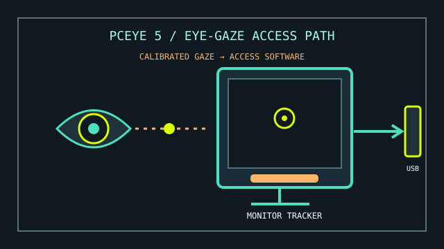

[ EYE TRACKING // WINDOWS COMPUTER ACCESS ]
Tobii Dynavox PCEye 5
A computer-mounted eye tracker intended for hands-free access through compatible eye-gaze and communication software.

MODEL IDENTIFICATION: Tobii Dynavox PCEye 5 eye tracker. Identify the device by its label and retain its original USB adapter/cable and any licensed access software with the record.
Model specifications
| Catalog leaf | Adaptive and switch-access controls |
|---|---|
| Exact model / identifier | Tobii Dynavox PCEye 5 (dedicated eye-tracking peripheral for compatible Windows computers). |
| Mechanism and primary specifications | Monitor-mounted optical eye tracker; converts calibrated gaze into pointer, dwell, or other actions through compatible software. |
| Host interface and compatibility | USB-connected Windows PC with the hardware and software requirements listed in current Tobii Dynavox support documentation; eye-gaze actions depend on TD Control, TD Snap/other compatible software, or supported Windows accessibility features. |
| Revision identification | Record device model, PC processor/OS, USB connection, software versions/licences, mounting position, and user calibration profile. |
Compatibility, setup & limitations
- This is an eye tracker rather than a self-contained computer or universal tablet accessory. Confirm the current minimum PC requirements, supported Windows version, USB connection, drivers, and software licensing before installation.
- Calibration and tracking performance depend on eye visibility, user position, display/monitor geometry, and ambient conditions; mobility aids or mounting changes can alter alignment.
- Gaze motion alone does not guarantee reliable click, drag, keyboard, or dwell behavior. Configure the appropriate access software and verify each required action in the target application.
- Do not extrapolate PCEye 5 software compatibility from the unrelated Tobii Eye Tracker 5 gaming product or assume that other Tobii tracker generations use identical installers.
Preservation and service
Keep the optical tracking window clean with only approved materials and protect the monitor mount from impact. Save configuration and calibration notes before moving the host or changing display scaling.
Log the exact PC specifications and software versions used in a successful eye-gaze test; compatibility may change with vendor software updates.
Manufacturer and manual sources
- Tobii Dynavox — PCEye product supportDevice-specific downloads, support materials, and current PC requirements.
- Tobii Dynavox PCEye 5 user manual referenceIndependent hosted copy of the product manual for model identification and setup details.
Use the manufacturer's current support page as the authority for supported system requirements and downloads.